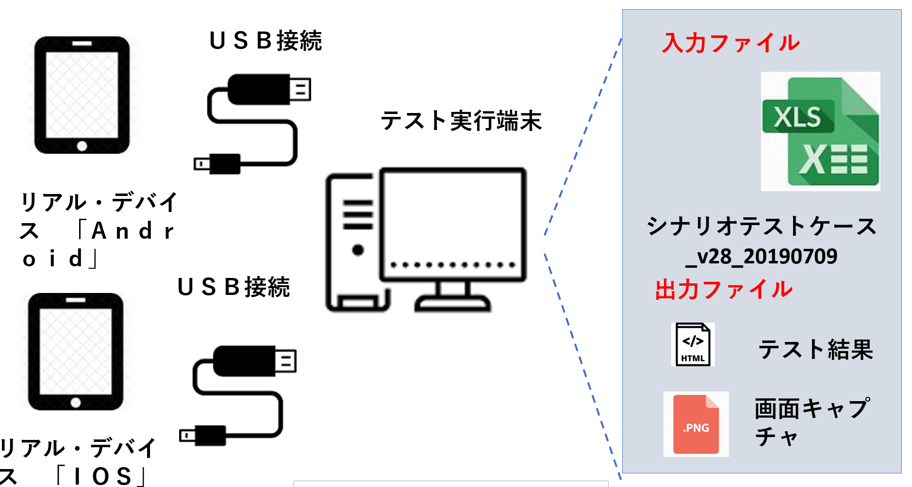
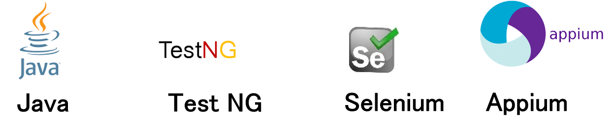

Test Automation
Challange
- Ramen shops in Japan are using system which had frequent changes。
- It was time consuming task to test changes on tab, mobile and PC everytime. 。
- Test automation was needed to do all functional testing on different devices like tablets,phone and PC
Achievements
- Ramen shops have automated the execution of test cases on the web portal
- Due to test automation ,savings are achieved on the cost spent on manual labour and testing the frequently changing system
- There is no scope for manual error
- High speed executions can be carried out parallely
AS IS

To be

Technologies

Major functionalities of the system
- Execution of test cases from an input XLS file
- Capture screen shots
- Test results update automatically
- Generation of test reports
Phases of development
- Basic Design
- Detailed design
- Implementation / Review
- Unit Testing
- Integration Testing